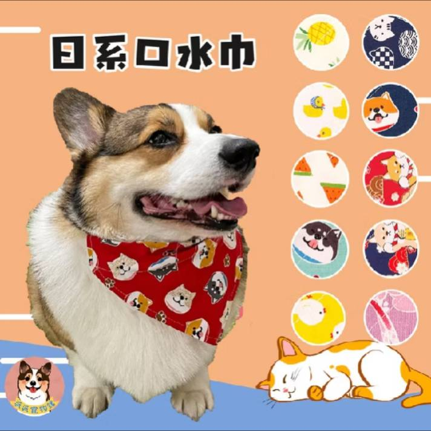
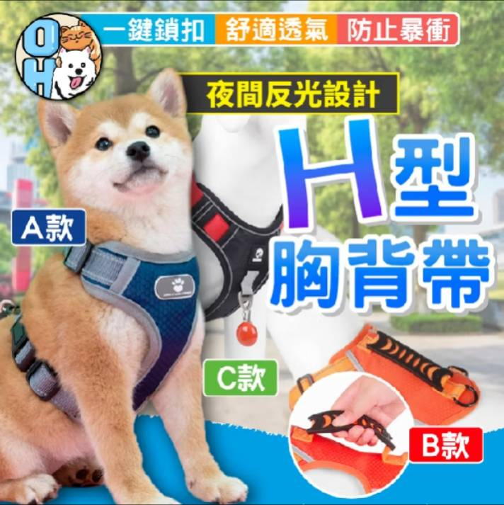
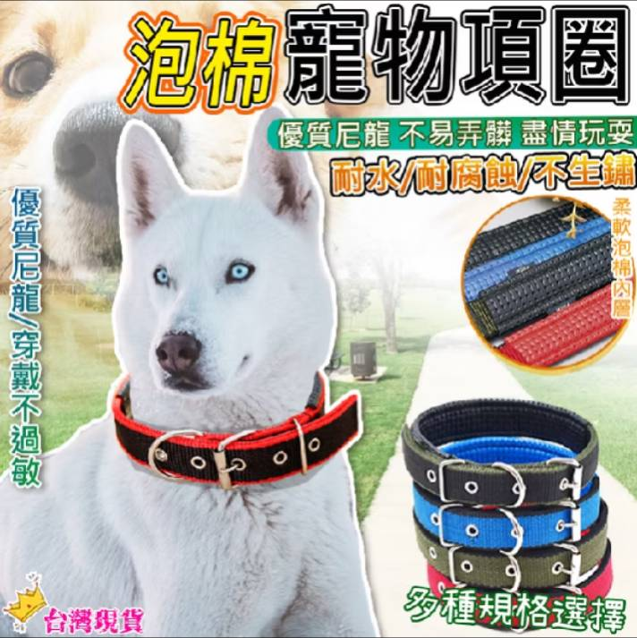

豪拜兒|最佳的狗狗牽引工具：該選擇項圈還是背帶？全面比較與選擇指南

對於狗主人來說，選擇項圈還是背帶一直是一個棘手的難題。牽引工具的選擇不僅影響狗狗的舒適和安全，還影響主人對狗狗的控制和散步體驗。選擇適合你狗狗的工具至關重要，但這並不是一個簡單的決定。項圈和背帶各有優缺點，以及特定適用的情況。本文將從多個角度分析這兩種選擇，幫助狗主人做出最明智的決定。
項圈的優缺點
項圈的主要功能是保護狗狗並便於控制牠們的行為。
優點：
- 輕便易戴。
- 便於主人清晰傳達指令。
- 有多種樣式，易於購買。
缺點：
- 對於容易拉扯的狗狗，可能會造成氣管受傷。
- 更容易脫落。
- 適合：沒有拉扯問題且在外出時保持冷靜的狗狗。
背帶的優缺點
背帶覆蓋範圍較大，有助於分散拉扯力，減少拉扯造成的傷害風險。
優點：
- 有效減少拉扯的力量。
- 多個扣具可以改變拉扯方向。
- 更容易訓練和引導狗狗。
缺點：
- 可能會使毛髮打結。
- 穿戴時間較長（取決於設計）。
- 適合：經常拉扯、不聽指令的小狗和正在訓練中的狗狗。
選擇項圈或背帶的建議
狗狗拉扯和受傷的主要原因不是項圈或背帶本身，而是缺乏正確的訓練和引導。拉扯的主要原因包括：
- 過於興奮，不斷拉扯主人。
- 被外界噪音嚇到，試圖躲避。
- 外出次數不夠，對環境充滿好奇。
- 主人應該花更多時間帶狗狗外出，耐心教導牠們在外出時保持冷靜，這不僅保護狗狗，還確保其他行人的安全。
項圈和背帶的區別
項圈：
- 適合所有品種和大小的狗，特別是大型犬。
- 日常佩戴方便，但可能對頸部造成壓力。
背帶：
- 時尚，佩戴時均勻分佈壓力。
- 特別適合小型犬和有呼吸問題的品種。
- 不會像項圈那樣傷害喉嚨或胸部。
結論
在選擇項圈和背帶時，應考慮狗狗的行為和安全。由於背帶比項圈提供更高的保護和安全性，因此在城市環境中更為適用。選擇背帶時，注意透氣性、不限制設計和合適的尺寸。
推薦產品
1. 歐豆K-狗狗胸背帶 點我前往

歐豆K-狗狗胸背帶，有著破萬筆的銷售量，並且4.9顆星好評，多款、多色可選，並有以下特點：
- 防止暴衝，不勒脖不勒手
- 透氣網布，透氣簍空網面
- 有效減震，嚴選工字設計
- 夜間反光，多點位反光條
- 抓狗提手，及時抓住狗狗
- 安全鎖扣，上推開下推鎖
- 牛津布料，高級質感耐用
2. 旺財商鋪-狗狗項圈 點我前往

旺財商鋪-狗狗項圈，同樣有著破萬筆的銷售量以及4.9顆星好評，多款、多色可選，並且有著相當吸引人的銅板價格，商品有以下特點：
- 優質尼龍寵物狗寵物項圈
- 5孔可調，柔軟舒適
- 柔軟的襯裡可以保護狗的脖子
- 尼龍材料，堅固耐用。
3. 派派寵物館-寵物領巾 點我前往
最後一件是派派寵物館的寵物領巾，雖然此款不歸類於項圈或背帶，但萌萌的日系風格，家中的小寵物配戴起來實在是十分可愛，且不論是貓咪、狗狗、刺蝟、兔子都很適合，在此也推薦給大家。
更多文章
想要更深入了解狗狗的習性和如何照顧牠們嗎？請點擊以下連結閱讀更多相關文章。點我前往更多文章